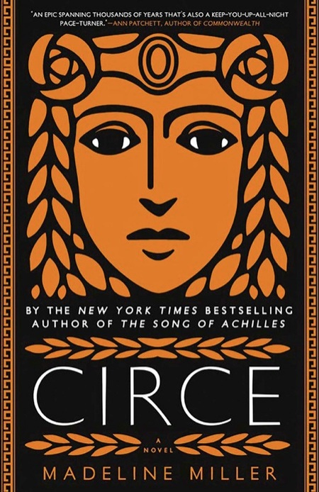
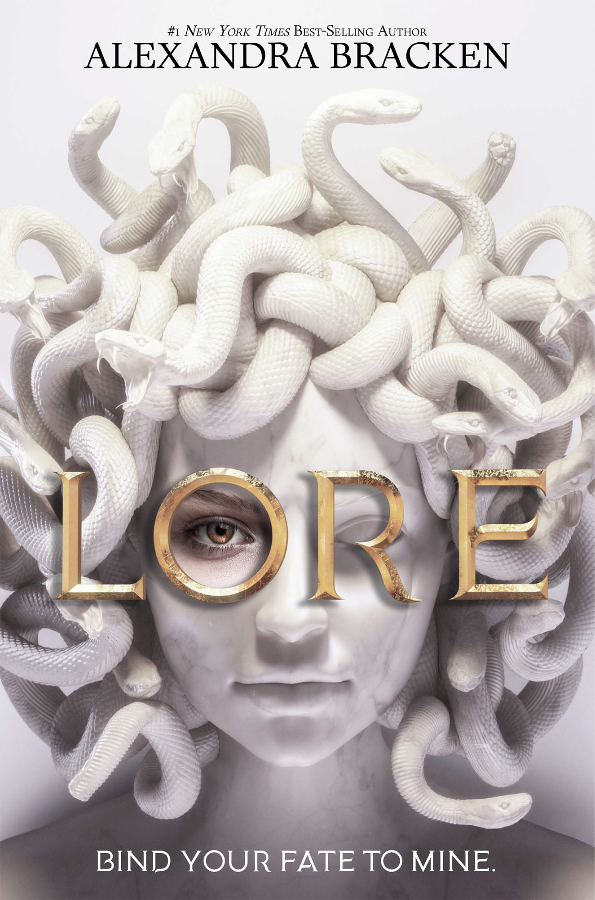
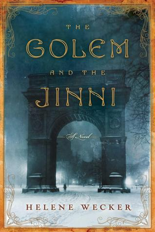
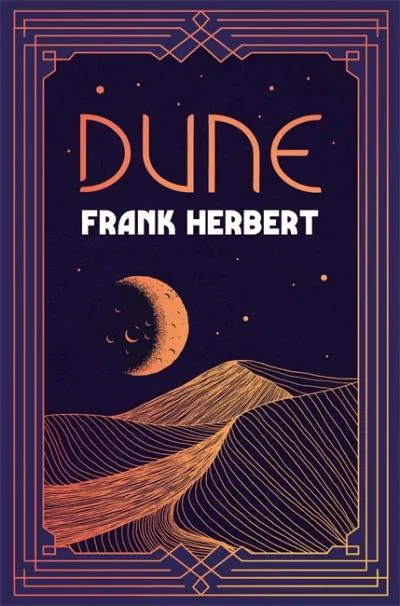
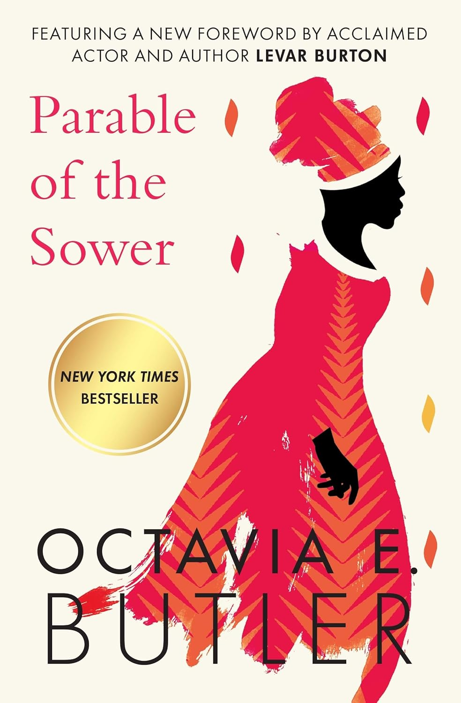
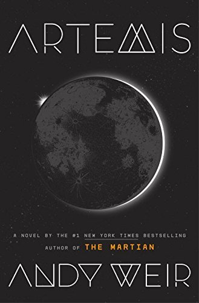
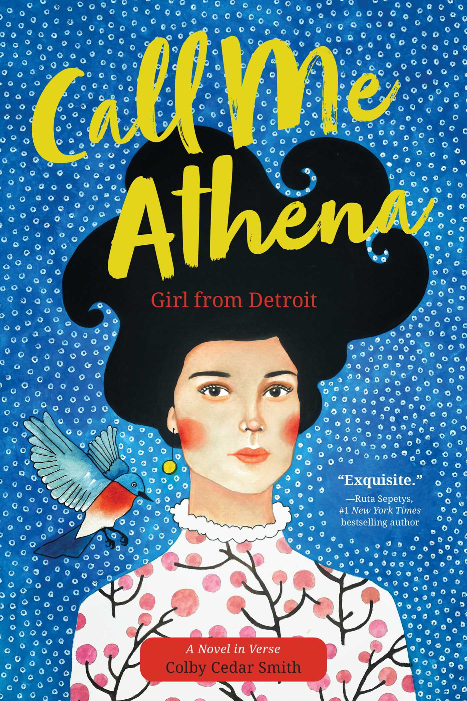
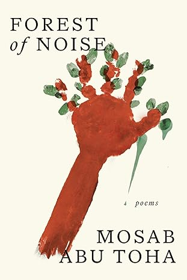

Welcome to The Next Book
This site is a collection of my favorite reads across different genres. Click on any of the genre tabs above to explore books I’ve loved and why they stood out to me.

A fierce and lyrical retelling of the Greek witch Circe, exploring isolation, power, and transformation.
A haunting and surreal exploration of identity and memory in a world of endless halls and tides.

Greek gods walk among mortals in this brutal, high-stakes mythological competition for power and survival.

A rich blend of myth and history, following two magical beings in turn-of-the-century New York City.

In a quiet world of post-industrial peace, a tea monk meets a philosophical robot seeking purpose.

A sprawling epic of politics, prophecy, and desert survival — the cornerstone of modern sci-fi.

A visionary story of survival and hope in a collapsing America, grounded in deep empathy and truth.

A smart, fast-paced heist story set in the first city on the moon, from the author of The Martian.

A beautiful verse novel about love, resilience, and identity across generations and cultures.

A meditative and lyrical collection exploring nature, silence, and inner echoes.
A powerful and timeless gathering of poems by an iconic voice — deeply human, bold, and brave.

A tender and imaginative poetry collection that bridges distance, childhood, and memory.